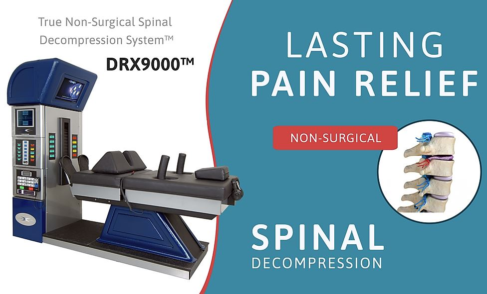
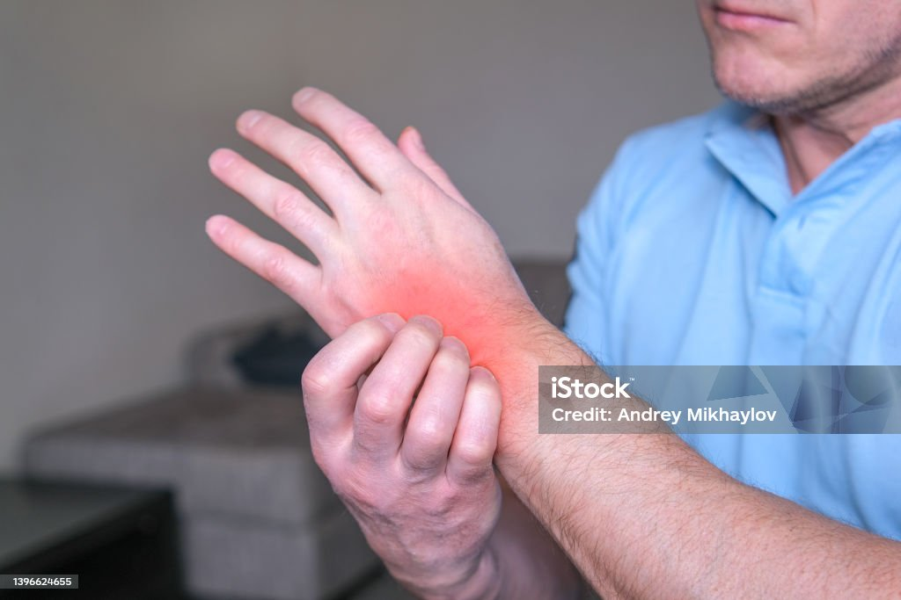
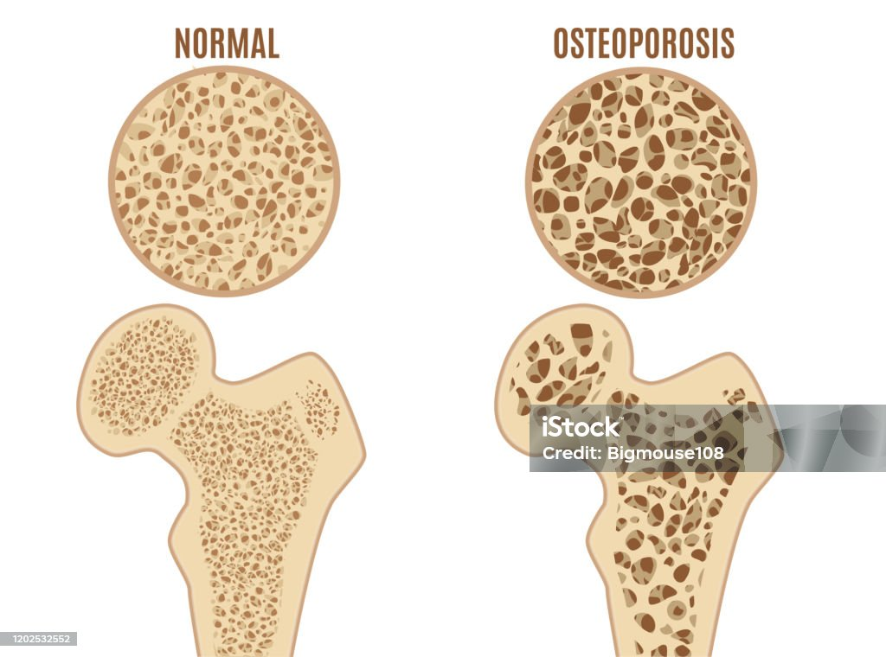
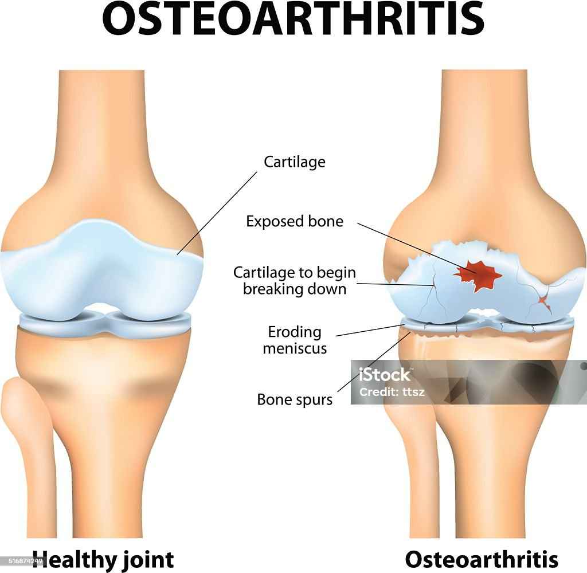
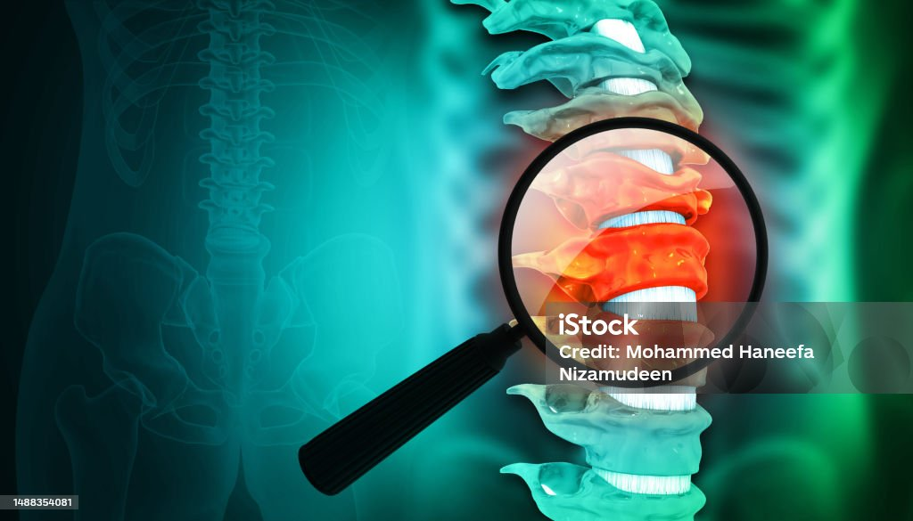

Non-Surgical Treatment for Low Back Pain: The DRX9000™
We also provide relief for: Back & Neck Pain, Sports Injuries, Arthritic Pain, Tendonitis & Bursitis, Headaches, Muscle Spasms, Automobile Injuries, Shoulder Pain, Sciatica & Leg Pain.
In practice for over 30 years, Dr. Michael Yablansky and his competent staff offer healing through personalized treatment plans in a friendly and caring atmosphere. Only safe and effective techniques are used. Our goal is to relieve the source of pain, so you can begin to enjoy a pain-free life.
Featuring the DRX9000™ True Non-Surgical Spinal Decompression System™. By decompressing the disc, the herniation or disc bulge is reduced in size, facilitating an influx of vital fluids and nutrients that are needed for the disc to heal. This offers relief by taking pressure off the spinal nerve. With a focus on innovation, the DRX9000 is committed to utilizing the latest, cutting-edge technology to improve the quality of life for those suffering from herniated discs, degenerative disc disease, and other back ailments.
Today, you may not have to live with that pain anymore. The DRX9000™ was developed to non-invasively treat lower back pain resulting from herniated, bulging, or degenerative discs. The DRX9000™ enables patients to return to more active lifestyles.
The DRX9000 True Non-Surgical Spinal Decompression System™ provides a primary treatment modality for the management of pain and disability for patients suffering with incapacitating low back pain and sciatica. It is designed to apply spinal decompressive forces to compressive and degenerative injuries of the spine. It has been found to provide relief of pain and symptoms associated with herniated discs, bulging or protruding intervertebral discs, degenerative disc disease, posterior facet syndrome, and sciatica.


Our Mission:
To provide our patients with the finest quality healthcare, utilizing the most modern technologies available today.
We strive to provide all of our patients with excellent customer service in a warm, friendly environment dedicated to delivering optimal health and wellness.
Our commitment to our patients has led us to develop a facility that consists of state-of-the-art technology designed to treat low back pain associated with:
Herniated Discs
Bulging Discs
Degnerative Disc Disease
Sciatica
Neck Pain
Mid Back Pain
Posterior Facet Syndrome
What Causes Back Pain?
Back pain can be caused by many different diseases and conditions. Some of these conditions can be very serious but fortunately they are for the most part uncommon. These serious conditions include; cancer, tumors, neoplasm, inflammatory arthritis and infection. Several common conditions that can cause back pain are listed below.

Fractures and Dislocations
Fractures and dislocations can occur anywhere in the body. The vertebral bodies which help support the weight of the upper body can break resulting in a compression fracture. These types of fractures can be very painful and even disabling.
It is important for the physician to determine the nature of these fractures. Some fractures can be caused by dangerous or serious conditions such as cancers, malignancies, or advanced osteoporosis. These are called pathological fractures. Other types of fractures may occur through traumatic events.
A dislocation is a term used to describe a condition where a joint has been disrupted and has separated to the point where the two adjacent bones are no longer aligned or touching. When a joint is dislocated the spine becomes unstable and is unable to protect the spinal cord or nerves.

Degerative Disc Disease
Degenerative Disc Disease (DDD) is a natural condition of the body that causes deterioration of the intervertebral discs. This is a gradual process that may compromise the spine. Although DDD is relatively common, its effects are usually not severe enough to warrant significant medical intervention. The intervertebral disc is one structure prone to degenerative changes associated with aging. Long before Degenerative Disc Disease can be seen radiographically, biochemical and histologic (structural) changes occur. Over time the collagen (protein) structure of the annulus fibrosis weakens and may become structurally unstable. Additionally, water and proteoglycans(PG) content decreases. PGs are molecules that attract water. These changes are linked and may lead to the disc’s inability to handle mechanical stress.

Herniated Disc
Herniation of the nucleus pulposus (HNP) occurs when the nucleus (gel-like substance) breaks through the annulus fibrosis (tire-like structure) of an intervertebral disc (spinal shock absorber). Injury to the disc may result in pain, numbness, tingling or loss of muscle strength. Disc injuries in the neck region may affect the arms or hands while disc injuries in the low back may affect the legs or feet. People between the ages of 30 and 50 appear to be vulnerable because the elasticity of the disc and water content of the nucleus decreases with age.

Facet Syndome
Facet syndrome is a common spinal disorder affecting the posterior joints that results in pain, stiffness and inflammation. Increased stress at the facets results in stretching of the ligamentous capsule, deterioration of the smooth cartilaginous surfaces and increased friction at the joint. In facet syndrome, the symptoms of pain, discomfort and weakness frequently localize to the spine, nonetheless a small percentage may be felt in the extremities or other body areas.

Foraminal Stenosis
The spinal nerves pass through openings on the side of the spine called intervertebral foramen. Foraminal stenosis occurs when these openings are smaller than normal. This condition can be the result of injury, degenerative change or congenital anomaly. The smaller opening may result in compression of the nerve. This irritation often causes symptoms of numbness, weakness, burning or tingling in the involved extremity. Long standing or severe stenosis may result in a functional loss.

Spinal Stenosis
Spinal stenosis is a condition where the size of the spinal canal is reduced. This may lead to compression of the spinal cord. Symptoms often include pain, numbness, tingling and weakness. Severe cases may actually cause loss of function and may even lead to disability. Spinal stenosis is more common in patients over fifty years of age. Many factors can cause stenosis including injury and degenerative change.

Fibromyalgia
Fibromyalgia is a chronic disorder associated with widespread soft tissue pain, tenderness and fatigue. A person with fibromyalgia will experience pain when up to 18 specific areas called tender points are pressed. Pushing carefully on these specific points during an examination causes discomfort or pain. The pain of fibromyalgia is more than normal muscle aches common after physical exertion. Fibromyalgia often can be severe enough to disrupt a person’s daily work and activities. The cause of fibromyalgia is not known.

Osteoporosis
Osteoporosis is commonly called the “fragile bone disease.” It is due to loss of bone density caused by a deficiency in such bone-building nutrients as calcium, vitamin D and other vitamins and minerals. The most common complication of osteoporosis is compression fracture. In people with advanced osteoporosis, compression fractures can occur as the result of simple daily activities such as bending, carrying heavy loads, or a minor fall.

Osteoarthritis (DJD)
Osteoarthritis, also called degenerative joint disease (DJD), is the most common type of arthritis. OA can occur in almost any joint of the body but most commonly occurs in the fingers, hips, knees and spine. Over time changes occur within the smooth cartilaginous surfaces of the joint. These changes lead to a loss of elasticity and the cartilage becomes stiff or brittle making it susceptible to injury. This will lead to stiffness, pain and crepitation at the joint. Advanced cases may actually result in significant damage to the bone itself.

Spondylolisthesis
Spondylolisthesis occurs when one vertebrae slips forward (translation) in relation to the adjacent vertebrae. Stability is inversely proportional to the degree of translation. The ability of a vertebrae to “slip” in relation to its neighbor can be caused by many factors, including facet or disc degeneration, trauma or a defect in a region of the vertebrae called the pars interarticularis. Severe cases may result in spinal cord or nerve compression and can require surgical intervention.
Sprain/Strain
Sprains and strains are two of the most common causes of back pain. They can be caused by trauma, overuse, lack of conditioning, and improper body mechanics. The term sprain is used when this injury occurs in a ligament. Conversely, strain is used when the affected tissue is muscle or tendon. Typically, patients will complain of increased pain with activity and relief at rest. Treatment will often include a period of rest followed by a therapeutic exercise program to increase flexibility and strength.
Testing For Back Pain
Medical Evaluation and Diagnostic Testing procedures should be performed prior to beginning any treatment in order to determine the treatment process that will be most effective. The following describes some of the evaluation testing procedures that can be performed to help confirm the cause of back pain.
The causes of back pain can be very complex, and there are many structures in the lower back that can cause pain. The following are used to test for the cause pain:


CAT Scan
Used primarily when problems are suspected in the bones or when a patient can’t obtain an MRI.

MAGNETIC RESONANCE IMAGING (MRI)
The most common test to evaluate the lumbar spine. Evaluates:
Vertebral bones
Discs
Joints
Nerves
Soft Tissues

MYELOGRAM
where dye is injected into the spinal column and then the area is flexed and x-rayed.

DISCOGRAPHY
Discography is a diagnostic procedure used to determine the level of the painful disc.

EMG
The EMG/Nerve Conduction Study is a useful test to study the nerves in the arms and legs.

BONE DENSITY
Bone density testing is fast, painless, and noninvasive. During a test, patients lie fully clothed on a padded treatment table while the machine scans one or more areas of bone. The entire test normally takes only minutes.

BONE SCAN
A Bone scan in Nuclear Medicine is a procedure which involves two steps: The patient is asked to arrive 3 hours before their actual scan to receive an injection of a small amount of radioactive tracer that is “tagged” to a calcium like material. Usually the tracer is injected in a vein in the arm of the patient. In some instances, other sites of injection are used especially for those patients that had difficult veins to find. The “radiopharmaceutical” has no side effects and because of this, the patient can be released from the department for 3 hours to give the calcium time to circulate and be taken up by the bone. There are no dietary restrictions so the patient may eat before and after the injection. After the three hours has elapsed, the patient returns to the Nuclear Medicine department for their scan. The patient is placed on a table a head to toe scan is performed by a “gamma camera”.
Accepted Insurance Coverage:


Meet Dr. Michael Yablansky

Dr. Michael Yablansky has been in practice for over 30 years. He earned his Doctor of Chiropractic Degree from Palmer College of Chiropractic and is a Diplomate of the National Board of Chiropractic Examiners.
Our competent staff here at Advanced Spinal and Chiropractic Care offers a friendly and caring atmosphere where our main goal is healing through personalized treatment plans for each individual patient. Dr. Yablansky has achieved effective results in treating neck, mid-back, low back pain, headaches, sciatica, whiplash, sports injuries, pinched nerves, disc problems, asthma, and arthritis. Our motto has always been, we care for people, leave your pain with us, says Dr. Yablansky, and that philosophy has earned his facility an excellent reputation for providing an atmosphere of satisfied patients eager to refer family and friends. We have always provided quality care for all ages including infants and toddlers to senior citizens.
“We treat our patients like family. At Advanced Spinal and Chiropractic Care, P.C., every patient receives the individual attention that they deserve. Our patients are the heart of our practice and we take that very seriously.”
Testimonials
Dr. Yablansky is a very professional and experienced chiropractor. The office is truly a family affair with his wife Denise at the front desk. I have been going there for 25+ years and wouldn’t go anywhere else! They are friendly and always very accommodating, too. I highly recommend Dr. Yablanksy for all your chiropractic needs. 03-04-2024

Cathy Vollono
I am a multi modality radiological Technologist and have suffered with back pain from lots of wear and tear and age through the years. I had done traction over 20 years ago prior to physical therapy and it worked for 20 years. Started suffering again and by God's grace, I saw the add on old country road and decided after look into it and go for the consult. All I can say is, after 3 treatments my life is back! I can't wait to see what all 30 treatments do. I will follow up this post with images from my pre and post MRI'S. THE PROOF WILL BE UNDENIABLE 02-28-2024
Christine Kwarren
I have been a most satisfied patient for years! Dr. Yablansky is thorough and takes time to explain what care he is providing. Officers efficient and Denise runs a smooth operation which keeps appointments on time. Highly recommended! 02-24-2024
Michael Ettinger
I've been coming to Dr. Yablansky for 30 years and have always received fantastic service. He's always helped my back problems tremendously. I recommend him highly 02-19-2024
Robert Falbee
Dr Yablansky is great and has helped my back pain greatly. Denise is super friendly and always accommodating. 02-12-2024
Scott Becker
Dr. Yablansky has been my chiropractor for quite a few years. He is wonderful and very caring. I am never rushed when I come in for an adjustment, and Dr.Yablansky takes his time answering any questions I may have. The office is friendly and welcoming, and I would highly recommend Dr. Yablansky. 02-12-2024
Sara Lan
Dr. Yablansky is the best!! I have been coming to him for a few years 02-07-2024
Dan Saltzman
Doc Yablansky and Denise are wonderful. They are kind and accommodating. They make you feel comfortable and at home in a professional atmosphere. He makes me feel brand new after every session. Highly recommend for your chiropractic needs. 02-03-2024
Josephine
Dr Y. is a wonderful Chiro. He has helped me so much with my back issues. I now have no discomfort and stopped taking pain meds! His wife Denise has made the experience a joy to experience. I actually look forward to seeing them each week. ❤️ 02-03-2024
Lisa Pollione
Dr. Yablansky and his entire staff are dedicated to total patient care. This includes but is not limited to the chiropractic services rendered, but also the administrative tasks (appointments, insurance, after care) associated therewith. I highly recommend Dr. Yablansky and his team. 01-31-2024
Michael Moss (MJ)
I have been a patient of Dr. Yablansky for years. He's kind and gentle and listens to what you have to say. Denise at the desk is more than helpful and she will make sure the Dr sees you that day if you’re in pain. I recommend them 100%! 01-31-2024